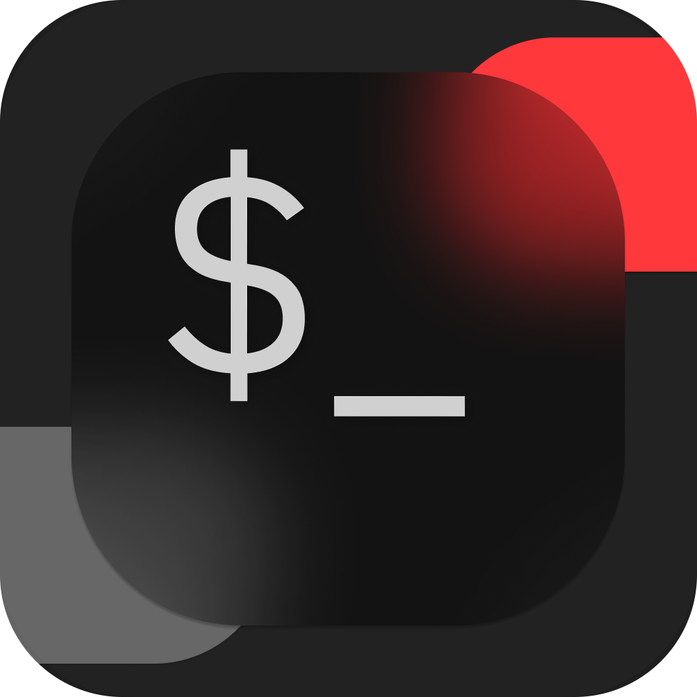

A modern way to connect.
A terminal built on Ghostty's GPU-accelerated core, dressed in Liquid Glass chrome with splittable panes, tab groups, and a command palette built in.
Recursive splits.
⌘D splits right, ⌘⇧D splits down, any depth. ⌥1–⌥9 jumps focus by number; dividers drag.
Command palette.
One launcher for commands, sessions across every window, SSH hosts, shell history, notes, tab groups, and quick "open in Finder / Cursor". Reorderable, keyboard-first.
Top or sidebar tabs.
Flip orientation any time. The sidebar can auto-hide and slide back in on left-edge hover, with the native traffic lights tucked into a floating glass pill.
Building...
Build complete!
~/conterm $
Agent status pills.
Claude Code and opencode are detected per-pane and show a live "ready / thinking / needs you" pill at the top of the pane. Non-destructive hook install.
The whole app in one card.
Conterm is keyboard-first. Everything below works from the moment you launch — no config, no learning curve.
Tabs & Panes
Palette & Search
System
Built on libghostty, Ghostty's embeddable terminal core. Conterm is an independent macOS frontend — same renderer, different chrome, opinions of its own. Not affiliated with the Ghostty project. · Read the README
Ready to try Conterm?
Download the latest release, drag it to Applications, and you're in.
xattr -dr com.apple.quarantine /Applications/Conterm.app